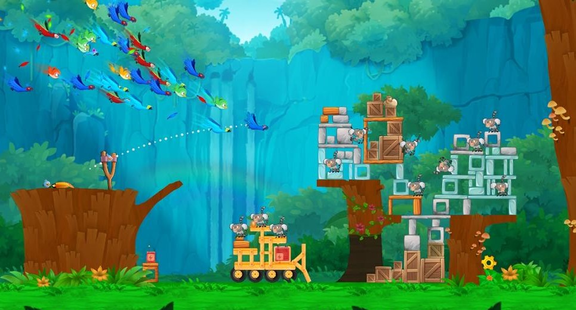
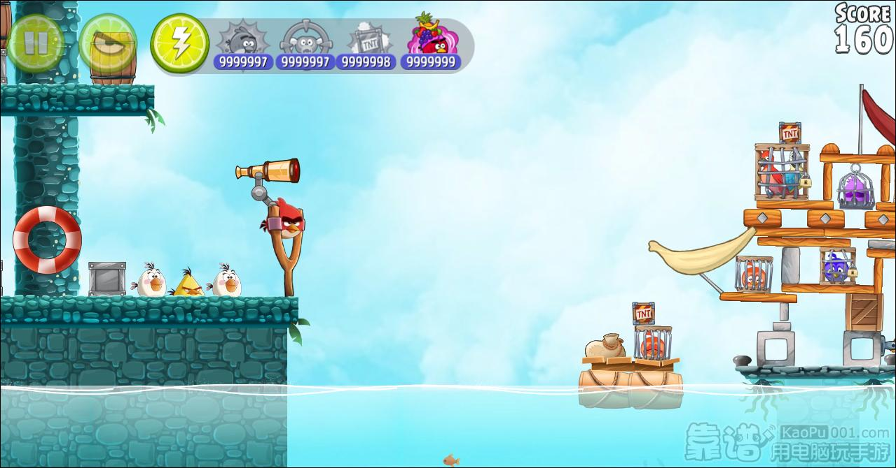

plot
Angry Birds are taking care of the eggs as usual. However, they are suddenly caught by an helicopter and taken to
a den in Rio de Janeiro, Brazil. The bird responsable of the kidnapping, Nigel, shows up and reveals that he had caught the
Angry Birds to sell them in exchange of one hundred thousand dollars, as they were part of an "exceptionally rare species".
With this and seeing all the other caught birds, including two macaws called Blu and Jewel, the Angry Birds break themselves
free from their cage and start to free all the other birds, including Blu and Jewel.

With this and seeing all the other caught birds, including two macaws called Blu and Jewel, the Angry Birds break themselves
free from their cage and start to free all the other birds, including Blu and Jewel. It is in this moment when it is revealed
that Blu and Jewel are united by handcuffs. Later, the flock, alongside Blu and Jewel, leave the den to go to a jungle nearby.
Enraged, Nigel sends his Marmosets to go after them.

Eventually arriving at an airport, the Angry Birds free the caged birds and go aboard an airplane, where they free Blu and
Jewel. Later, the flock has a final showdown against Nigel. After being defeated, Nigel tries to leave the plane as the freed
birds leave. However, he crashes onto one of the plane's propeller, damaging it, and falls to the ocean. However, the Angry
Birds manage to control the plane to go back to Piggy Island. There, Foreman Pig and a Minion Pig try to steal the eggs,
though they leave in panic when they spot the plane. The Angry Birds leave unscratched, happy that the eggs are safe as the
two pigs watch behind a bush.